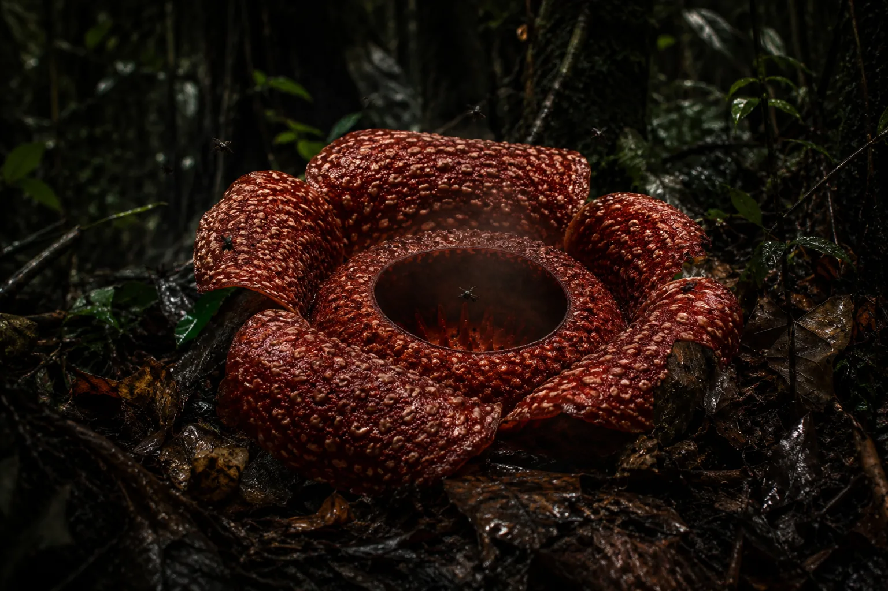
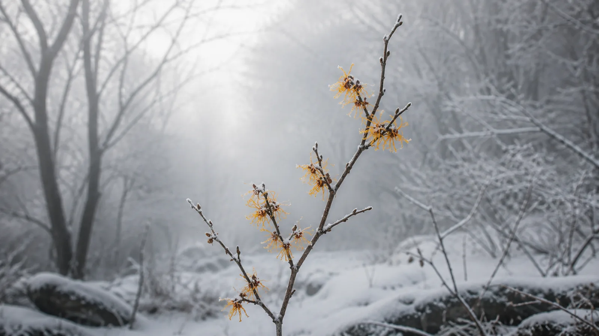
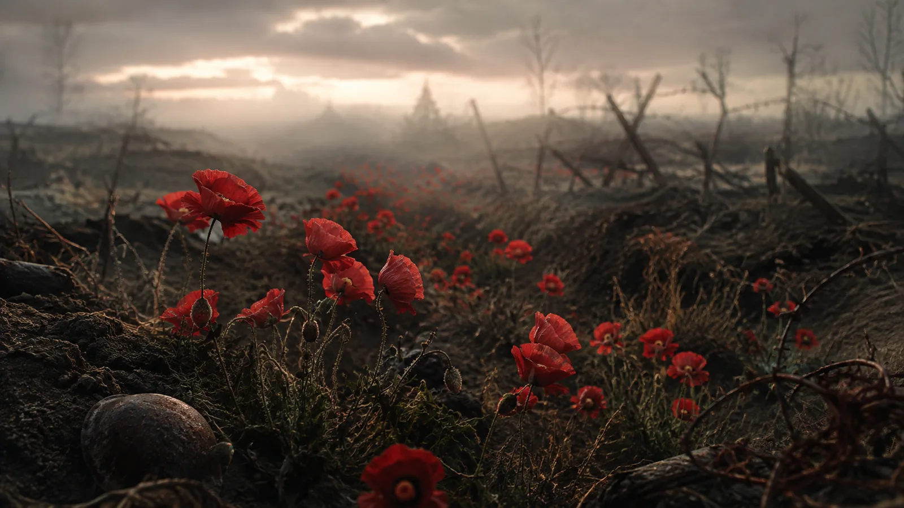
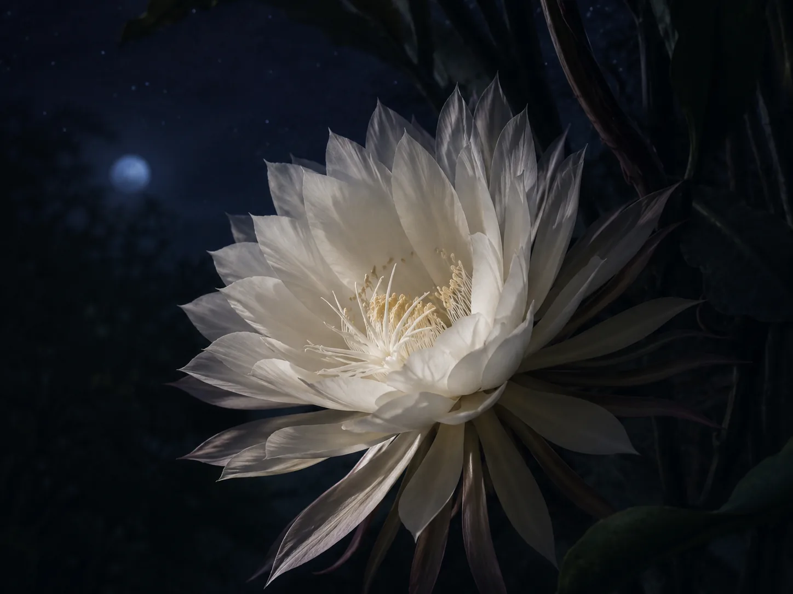
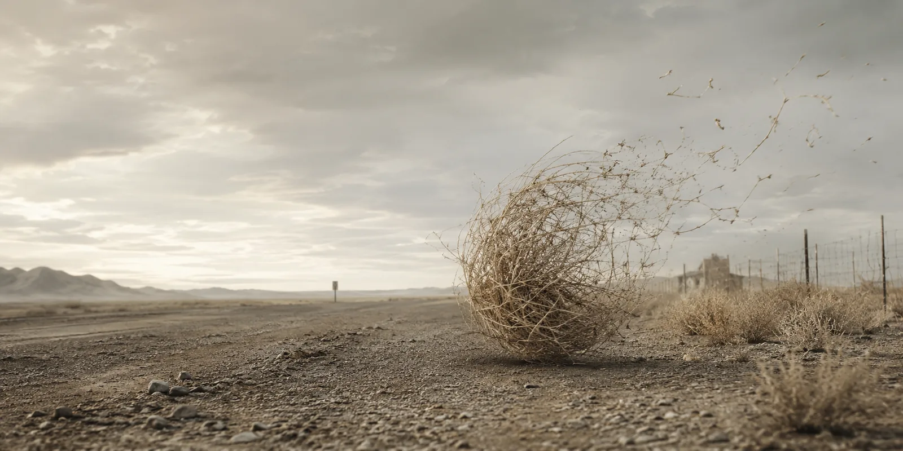

大王花
它在蛰伏多年之后骤然绽开。一道活着的伤口，在雨林深处裂开——肉红色，斑驳，正在腐烂，敞开的巨口呼出的气味恶臭得让食腐的鸟都在半空停翅、向后一缩。一场骗局，一场对腐烂的 grotesque 拟真，专为引诱而生。空气被它的恶臭变得黏稠——那是献给苍蝇的供品，献给腐烂的报信人、死亡的封臣的供品；它们成群嗡鸣而至，贪婪地扎进它腐肉般的褶皱里。
没有纤细的花茎，没有微风里的轻轻摇曳。只有这个——五片肉质的裂瓣，摊开在幽暗、令人不适的绿光里，在静止中窒息；一朵没有口、没有根、从另一者的血脉里取食的花，一副龇着牙的奇观。
有人说它稀有。有人说它受诅。可它只是等一个绽放的时机。然后它破土而出，仿佛大地自己裂开，露出某种古老而无名的可怖。在短短几天里，它统治林间的地面，与时间作对地统治着，随即向内坍缩，蜷回自身，沉回那具被它窃取了生命的躯体。它偷来的生命形态。
大王花没有坟墓。

金缕梅
它在世界并未邀请它的时候开花——当众树光秃而脆硬，当大地缩进自己怀里、对着寒冷发抖的时候。
它违逆时间。在花不该开的时节开花，在生命该退场的地方茂盛。这份执拗里有某种令人不安的东西，仿佛它记得一个其余植物早已忘干净的秘密。
风穿过树林，锋利如碎玻璃，金缕梅却不退。它在时间踉跄处茂盛，在日子被拉得极细、仿佛年份自己都在犹豫的地方扎根。它不在风里摇曳；它颤抖，并且抓住不放，死死守住它这片无季节的领地——那必定无人看见的地方。
雪来了，苦而烈，花瓣却不落。它们颤，但它们站着。一点转瞬即逝的金，衬在冬天灰白的骨架上，施着无人敢叫出名字的咒，拼命想在自己的绝唱之前，触一触天空。

罂粟
被战火犁过的田地，不会忘记。
即使靴子已经开拔，枪声已经沉寂。
即使世界已经裁定：再没有什么值得哀悼。
罂粟升起来。它们在被人犁开的土地上开花，在骨殖沉为尘土的地方，在悲伤被深埋进一层层时间之下的地方。
它们是无尽灰烬上的小小火焰。火焰一样的红，在滞留不去的寂静里仍旧摇曳。灰色的，却不是死灰。悲哀本该在场之处，偏偏是美。废墟之上，偏偏有生。
它们不乞求诗，不乞求沉默，也不乞求敬畏。它们只是开花，一年又一年，在那些领教过人类最坏一面的田里。它们不断生长，不断归来，哪怕世界早已走远。

昙花
她潜藏在寂静里，在黑暗中沉思。她不像那些白昼的花，带着急切的躁动绽开，把花瓣抛进阳光，等蜜蜂跌跌撞撞地撞上她。
整个白天，她等待，无声，向内收拢，隐藏。别的花在她四周盛放，莽撞，急不可耐，把美貌挥霍在白昼刺目的光里。可她更明白。她知道有些秘密，只留给星光。
于是，当世界开始睡去，她无声地开了。花瓣舒卷，在缓慢而克制的寂静里伸展。她的颜色不纯粹也不被动——是白，没错，却像月亮本身一样，燃着香气。它缠住靠得太近的人，让他们停下，让他们吸进某种他们永远无法真正懂得、却也永远无法忘干净的东西。
有几个小时，她在位——不染必死性，不为时间的要求所扰。可夜不会长久。而黎明，从不请求许可。
于是她数着距离自己葬礼的钟点，与时间相抗。而当夜真的尽了，她再度向内收拢，退回缺席，把她的秘密一并带走。没有枯萎的残骸，没有散落的花瓣，没有任何她曾在此的凭据。

风滚草
它没有家。没有故国。没有根。只有风，和风无情的召唤。它翻滚着，像在逃离什么看不见的东西——也许是在逃离时间本身——跃过被沙淹没的道路，刮过锈蚀的铁丝网，旋转着穿过一座座早已空了的小镇的骸骨。它不在意方向。方向是给活人的。
它刮过盐碱滩，一路脱落尖刺，像蛇蜕掉不再需要的皮。有时它挂在带刺的铁丝上，在那里颤抖，像一只被困住的幽灵。可风总会回来，总会低声说：走，走，不许你歇。于是它走，慢慢地散开，慢慢地碎，把自己一星一点撒进尘土。等它终于散成乌有，它已把同一小片土地穿过了三遍。
那不是生命。那是散开的进程。
它一路咔啦咔啦滚过高速公路，路旁被遗忘的路牌指着不存在的地方。它穿过那些曾经聚满人声、如今只剩废弃的空间——留给尘土，和尘土拒绝保存的记忆。
它去哪里？风要它去哪里，它就滚向哪里，去了。
